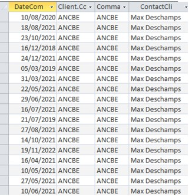
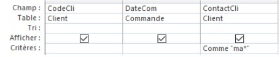
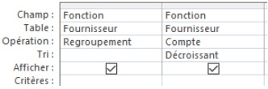
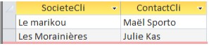
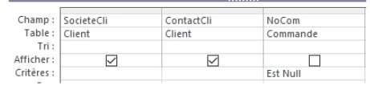
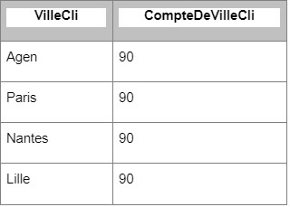
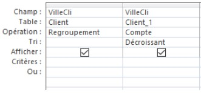

| Enoncé | Interprétation | Resultat | QBE | Quelles sont les dates des commandes du client Max Deschamps ? | Nous avons ici toutes les commandes du client Max Deschamps, pour le trouver nous avons du rechercher le contact client Max |  |  |
|---|
| Enoncé | Interprétation | Résultat | QBE |
|---|---|---|---|
| Quelle est la fonction de contact fournisseur la plus représentée ? | La fonction du contact fournisseur la plus représentée est Chef de ventes avec 7 contacts malgré qu'il y a des problèmes d'écriture dans les fonctions des contacts, comme les représentants ou il y a différent type d'écritures comme Representant€, Représentant(e) et Représentant |  |
 |
| Enoncé | Interprétation | Resultat | QBE |
|---|---|---|---|
| Est-ce qu’il y a dans la clientèle des clients qui n’ont pas encore passé de commande ? | Il y a 2 clients qui n’ont pas commandé : “Le marikou” et Les “Morainières”. |  |  |
| Enoncé | Interprétation | Resultat | QBE |
|---|---|---|---|
| Dans quelles villes la clientèle est-elle la plus importante ? Citer les 3 premières. | Il y a 4 villes qui ont un nombre de clients égal, magré qu'on nous demande que 3 villes, la base de donnée indique les 4 qui sont égales. |  |  |